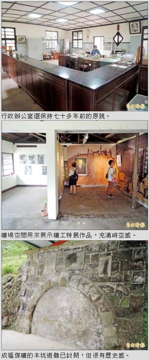

〈台北都會〉
成福煤礦開礦百年 礦區首辦特展
翁聿煌｜自由時報／大台北都會生活｜2016年4月3日
國內少數維護完整並保持行政運作的三峽成福煤礦，民國七十二年停止開採後，一直未對外開放，今年正值成福煤礦開礦百年，首度在礦區舉辦「百年風華：走過黑金歲月」特展，展出台日六位礦工藝術家、百件國內外與煤礦有關的作品，民眾也可親眼見證台灣重要煤礦現址，想像當年採礦的危險艱辛。
位於三峽近郊的成福煤礦，曾是日治時期台灣的八大煤礦之一，產量豐且品質佳，成福煤礦開採全盛時期，礦工人數多達三○三人，是台灣歷史悠久的煤礦，現存主坑口雖已封閉，但在坑口上仍可見「礦業報國」四字。
一走進成福煤礦園區，在右側可見一灰瓦白牆建築是礦場的行政辦公室，建於一九三九年，至今維護良好，內部櫃台桌椅陳設仍維持當年原貌，彷彿走進時光隧道。
場區內建築還包括日式的礦工福利社、休息室、礦坑木料區和蓄木池，沿著山路朝礦坑的「本坑道」前進，途中還有礦工更換頭戴式探照燈電池和燈具的工作室，主辦單位利用場區內空間，蒐集陳列特別的礦工藝術展，包括日本的「炭坑繪師」山本作兵衛，作品被列入聯合國「世界記憶遺產」，台灣礦工畫家洪瑞麟作品、李梅樹畫作、雄獅美術創辦人李賢文的礦坑攝影作品，梁正居、簡永彬的礦坑及礦災攝影，總共百幅的繪畫和照片，真實呈現昔日礦工的生活和悲喜情緒，成福煤礦及「百年風華：走過黑金歲月」特展到四月廿日止。